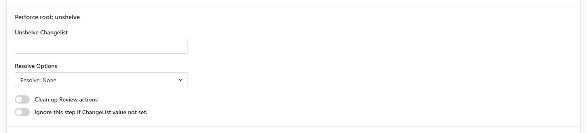

Perforce root: unshelve
A build step that unshelves a shelved changelist into the workspace of a build configuration that uses a Perforce root.
When to use it
Use it when the build configuration gets its code from a Perforce root and a step must put a named shelf on top of the synced files. It does the same as Perforce: Unshelve, which does not work with a Perforce root. For one-off tests of a shelf, use the Shelved changes tab of the Run dialog instead (see Shelves).
How to set it up
- Open the build configuration and go to Settings › Build steps.
- Click Add build step, type
unshelvein Filter step types and click Perforce root: unshelve. - Fill in the fields below.
- Click Save.

Every field
The form is the same as for Perforce: Unshelve.
| Field | What it does | Default | Example |
|---|---|---|---|
| Unshelve Changelist | The number of the shelved changelist. Build parameters can be used. | Empty | ${SHELF} |
| Resolve Options | None, Safe (-as), Merge (-am), Force Merge (-af), Yours (-ay, keep your edits) or Theirs (-at, keep the shelf content). | The first in the list | Resolve: Safe (-as) |
| Clean up Review actions | Removes review actions the unshelve left behind. | Off | Off |
| Ignore this step if ChangeList value not set. | An empty changelist makes the step do nothing and succeed. | Off | On |
The step uses the root's connection and its workspace. With several roots, it uses the Perforce root's own checkout folder.
A worked example
On Windows Build, a parameter SHELF is empty for normal builds. The unshelve step has Unshelve Changelist ${SHELF} and Ignore this step if ChangeList value not set on. A build started with SHELF=48790 tests that shelf on top of the latest code.
What you see when it runs
The log shows the unshelve and resolve. The build's Changes list the shelved changelist first, then the changelists since the last build.
Problems and fixes
| You see | What to do |
|---|---|
| The step fails with a number error | The field is empty or not a number. Fill it in, or tick Ignore this step if ChangeList value not set. |
| A credential error | The root's connection is not usable here. Check it on the connection page. |